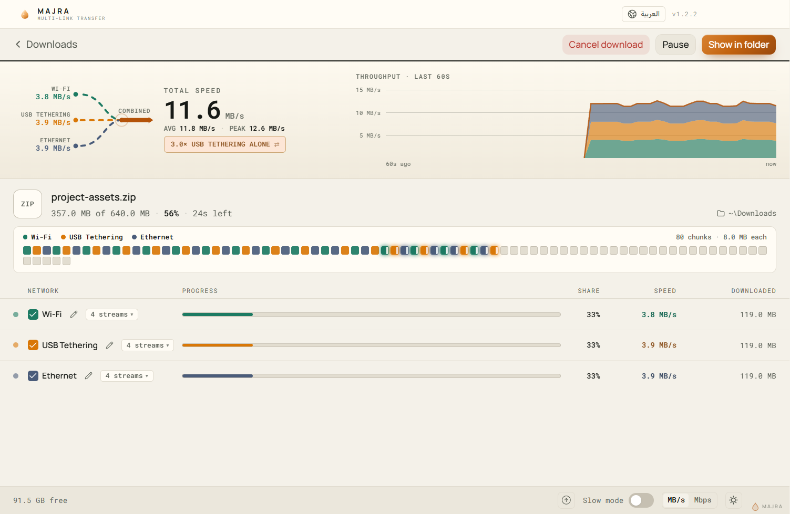

Every connection, together
Wi-Fi, Ethernet, USB tethering and mobile data can carry the same file at once.
Majra opens connections over every network Windows exposes — Wi-Fi, Ethernet, USB tethering and mobile data — binds each stream to an interface, and reassembles the blocks in order. One file, every connection, at the same time.
Signed-in pages, byte-range servers, very large archives, and connections that come and go. Majra is made for the messy version of the internet, not the demo.
Wi-Fi, Ethernet, USB tethering and mobile data can carry the same file at once.
Pick 2, 4, 8, 16 or 32 parallel connections per network. Turbo mode scales to 64.
ZIP, RAR and TAR archives — including .tar.gz, .tar.bz2 and .tar.xz — unpack while they arrive.
Paste a file URL and go. No in-between page, no forced account. Signed-in downloads keep their cookies.
The Chromium extension sends a download to Majra with the browser's cookies, then gets out of the way.
Pause, resume after a reboot, and start downloads at a time you choose.
Open a .torrent or a magnet link as one more source, not as a second app.
Settings, history and queue live on your PC. Nothing is sent to a server.
Majra asks Windows for the active interfaces, splits the file into blocks, and keeps every stream busy. Arrived blocks are written in order; a missing block is re-requested from another stream.
Read the active network interfaces and their addresses.
Cut the file into blocks and bind each stream to an interface with room to spare.
Write blocks in order, re-request the gaps, then extract the archive in place.
Every connection shows its own speed and state, while the file is written once, in order.

The extension carries the browser's cookies, so a page you are already signed in to keeps working.
When a server does not support byte ranges, Majra falls back to one stream for that link. It tells you so.
A download manager should be clear about the shape of the network, not sell a fantasy. These are the real boundaries.
It cannot create bandwidth. Two connections behind the same router often share one uplink; the combined speed will not double.
Turbo raises the count, not the server's capacity. Some servers rate-limit or block aggressive parallel requests.
Not every link can be split. Servers without byte-range support fall back to a single stream.
The installer is unsigned. There is no code-signing certificate yet, so SmartScreen may ask you to confirm.
It is a download manager, not a VPN or a proxy. It uses the connections Windows already has.
The installer is an assisted setup: choose the folder and the drive, and it creates a desktop shortcut.
Get the 127.8 MB installer from the latest GitHub release.
It is unsigned, so SmartScreen may warn you — choose More info, then Run anyway.
Paste a URL, choose a folder, and press Start. Majra does the rest.
Hash the installer before you run it. The SHA-256 for v1.2.3 is:
Get-FileHash .\Majra-1.2.3-Setup.exe -Algorithm SHA256
E009724DD5601171F45874A69539C1464BC051B112472C11B87CCB40F5871B5E
A mismatch means the file is not the release. Stop and download it again.
The Chromium extension (Chrome, Edge, Brave, Opera) captures a download and hands it to Majra with the right cookies. No copy-paste, no lost login.
Get Majra-Browser-Extension.zip and unpack it somewhere permanent.
Go to chrome://extensions and turn on Developer mode.
Choose Load unpacked and select the folder you unzipped.
Pick a file in the browser and let the extension route it to Majra.
One installer, no account. Windows 10 or 11, 64-bit. Keep the SHA-256 for your own check.
Unsigned installer. SmartScreen may ask you to confirm — verify the hash first.
DroidCrate is the Android workbench: six tools, real device specs, verified Platform Tools and checklists before the risky parts.